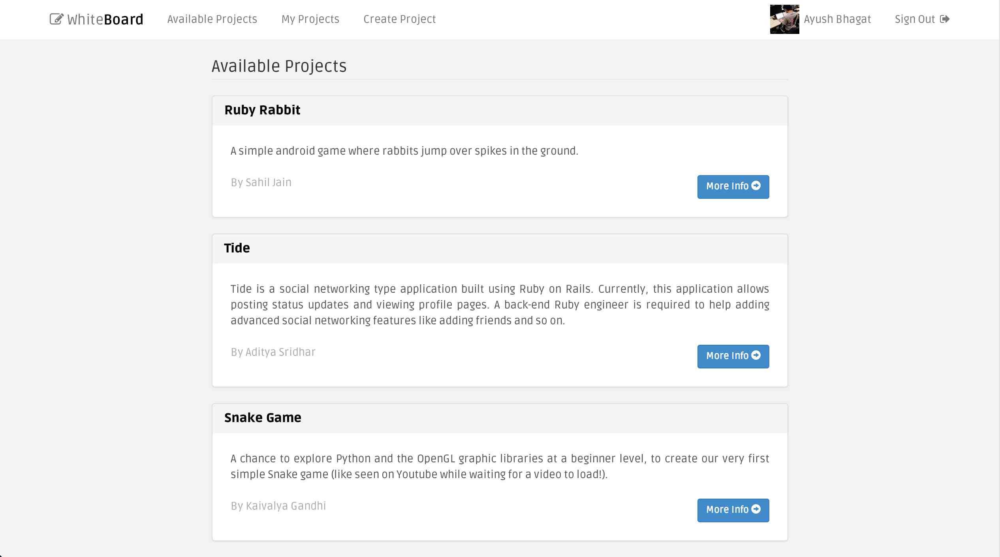
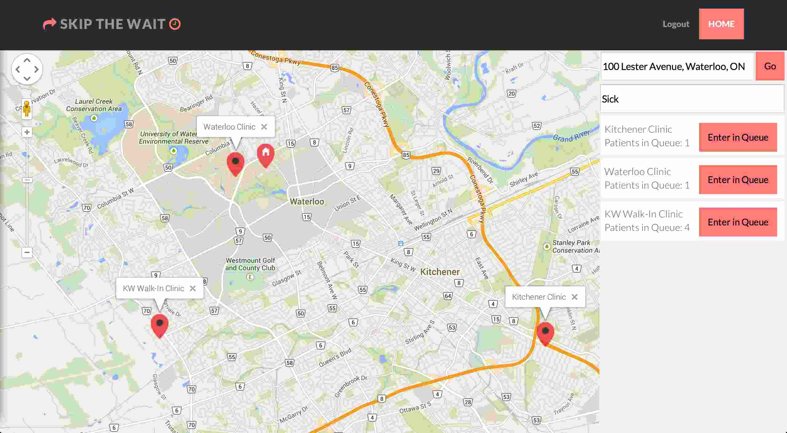
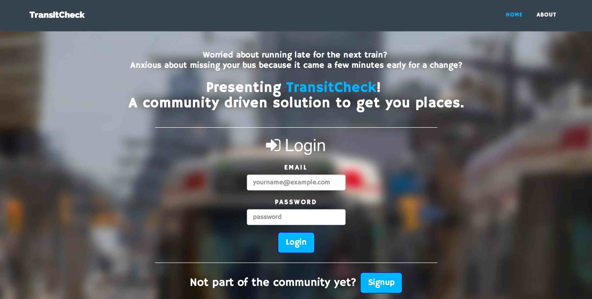
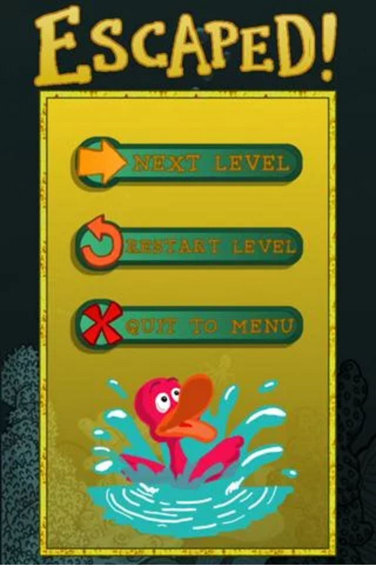
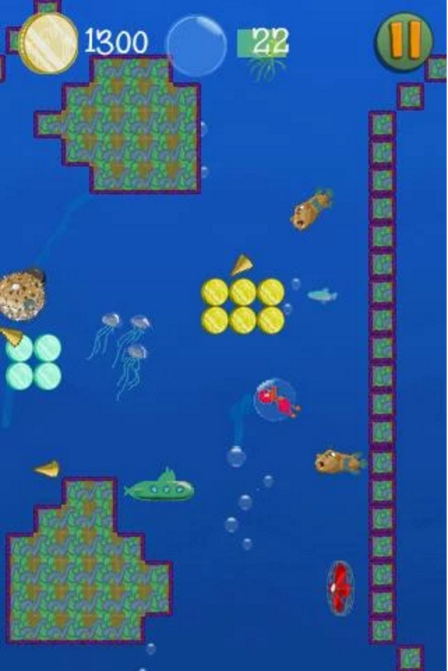
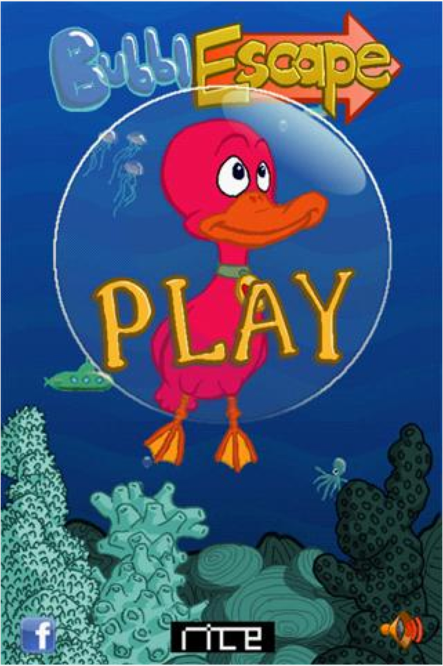

EXPERIENCE
 Google
Google
Software Engineering Intern - Display Ads
Redesigned a core piece in the ad-serving infrastructure to increase speed and performance. Presented this design to the Waterloo Ads Serving Infrastructure team.
Sep - Dec 2015Software Engineering Intern - Shopping Now
Created a dashboard powered by a FlumeJava (MapReduce) pipeline that calculates aggregated statistics from billions of user data entries.
Jan - Apr 2015Tutorjam
Software Developer Co-op
Developed an end to end system allowing the admin to edit, remove, and publish tutor profiles from SchoolTutoring to the tutor catalogue on WordPress.
May - Aug 2014University of Waterloo
Software Engineering (Co-op)
2014 - 2018
PROJECTS


Skip The Wait
Web application that acts as a check-in system for patients and walk-in clinics. Patients can see the closest clinic near them, the number of patients already in the queue and can queue in before physically going to the clinic. Clinics can see the patients in the queue and the medical reason for which they are coming in.

Transit Check
Web application that informs users of the situational delays for TTC. A community driven solution to the day-to-day problems of unexpected delays in transit buses. Users can simply send a message to their followers to notify them of the delay.


